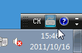

Windows7 基础入门教程
作者：TeliuTe 来源：基础教程网
五、输入汉字 返回目录 下一课前面我们学习的是英文的输入，怎样用键盘来输入汉字呢？下面通过搜狗拼音输入法来学习；
1、安装输入法
1）系统自带的拼音输入法每次要按回车，我们一般用搜狗输入法，
输入法图标在屏幕右下角，是一个小键盘图标，可以最小化到任务栏；

2）正确安装搜狗输入法后，点击这个小键盘图标，就可以看到中文输入法；
3）当切换到中文输入法时，屏幕右下角会有一个输入法状态条，小键盘变成一个彩色的S，
再点击“S”图标，选择输入法列表里的“中文(简体)-美式键盘”，就可以回到英文输入状态；
4）状态条上的各个文字和图标按钮，都可以点击，点一下切换，再点一下还原，
左边的“中”点击后，可以暂时换到英文状态，也可以按键盘上的shift键，
旁边的月亮图标，点一下变成圆月亮，这时输入全角字符(大一些)，
2、输入汉字
1）点“开始－所有程序”，选择“附件－记事本”，出来一个文本窗口，里面有一个竖线一闪一闪，这是光标插入点；
2）输入自己姓名的拼音字母，按回车键到下一行；
3）点击上面板的小键盘图标，选择“中文(简体)-搜狗拼音输入法”，下边出来一个状态条；
4）继续输入自己姓名拼音，这时拼音会显示在一个长条中，里面也有许多汉字，
按汉字前面的数字可以输入汉字，第一个汉字可以按空格键输入，有错误拼音就按退格键删除；
5）如果输完拼音后，在候选窗口里没有姓名里的汉字，就按键盘下边的大于号键往后翻页，也可以按上边的加号键；
6）可以一个字一个字输入，也可以一次输入一个词语，用词语速度输入要快些，拼音可以输入完整的，也可以只输入第一个字母；
3、保存文件
1）把姓名输入好以后，点菜单“文件－保存”命令，出来一个保存对话框，
进行保存操作的时候，按照从上到下的顺序一步一步来；
2）在中间找到自己的文件夹，点两下左键双击打开，在下边的文件名中，输入“姓名”，然后点保存，
也可以先点一下自己的文件夹，再点一下“打开”，操作比较灵活；
3）检查一下上边的文件名和保存位置都正确以后，点右下角的“保存”按钮，完成保存；
本节学习了输入汉字的基础知识，如果你成功地完成了练习，请继续学习下一课内容；
本教程由86团学校TeliuTe制作|著作权所有
基础教程网：>http://teliute.org/
美丽的校园……
转载和引用本站内容，请保留作者和本站链接。